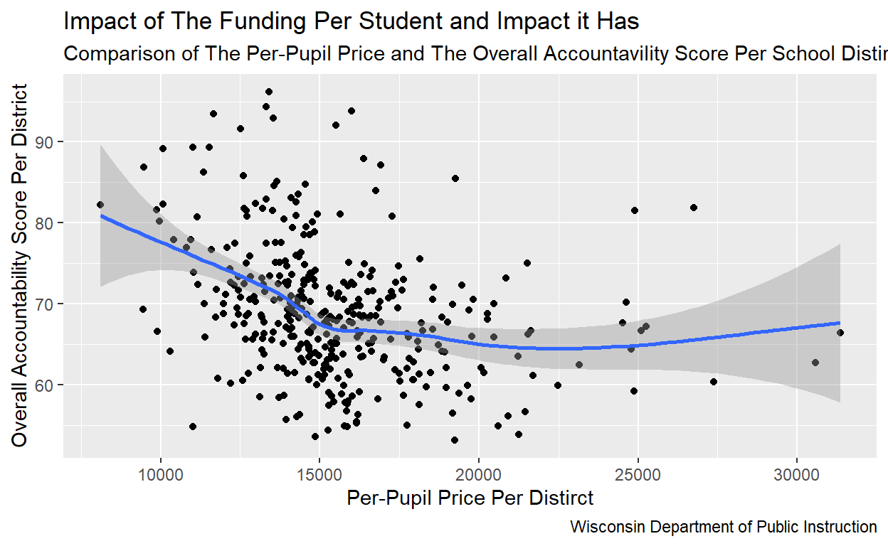
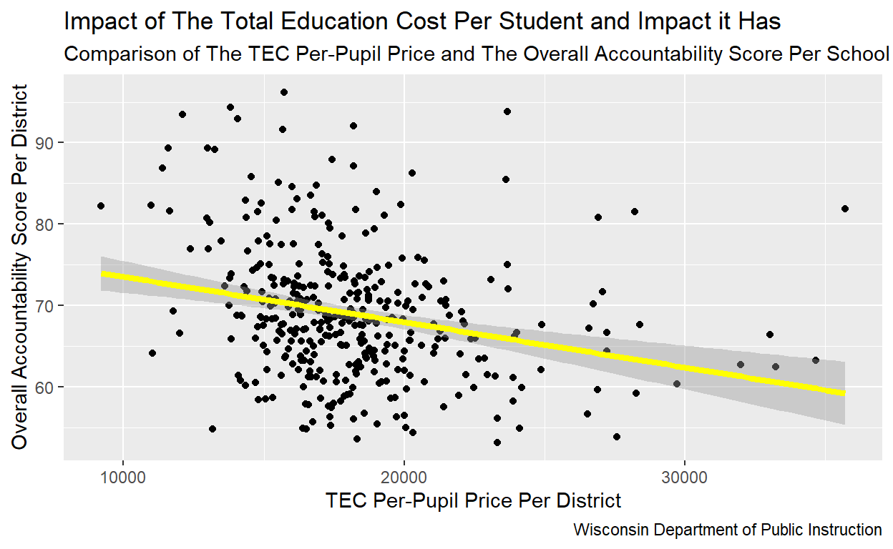
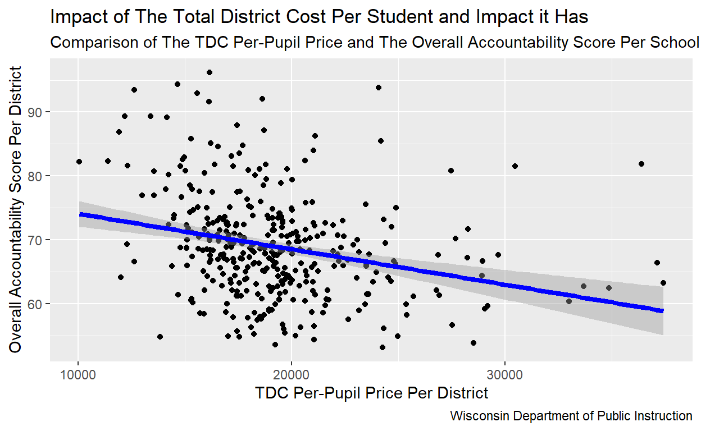
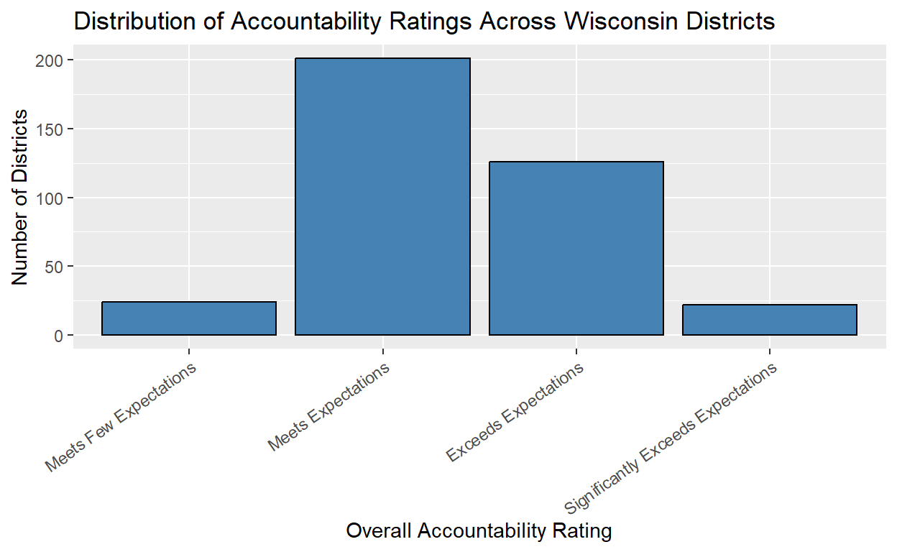
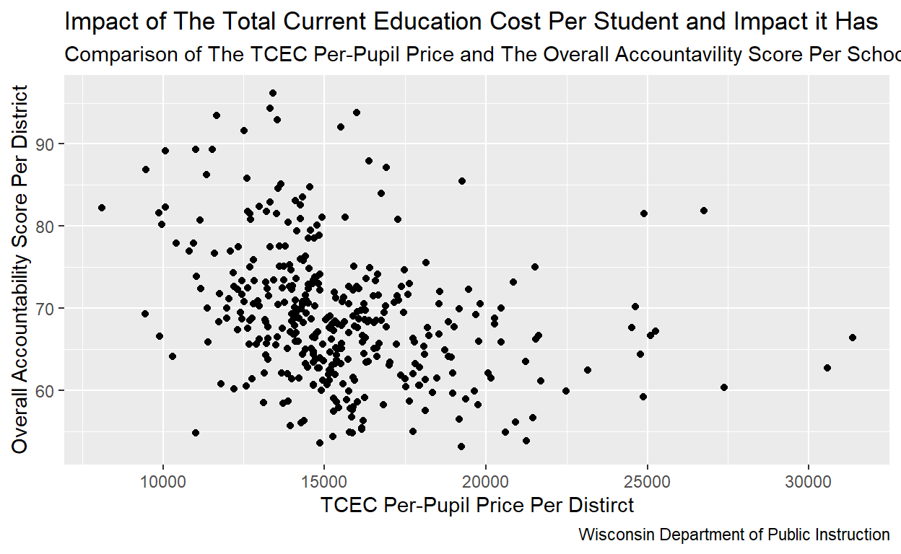
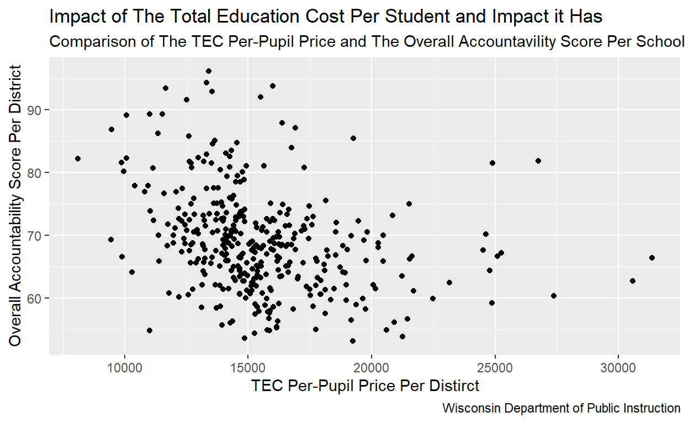
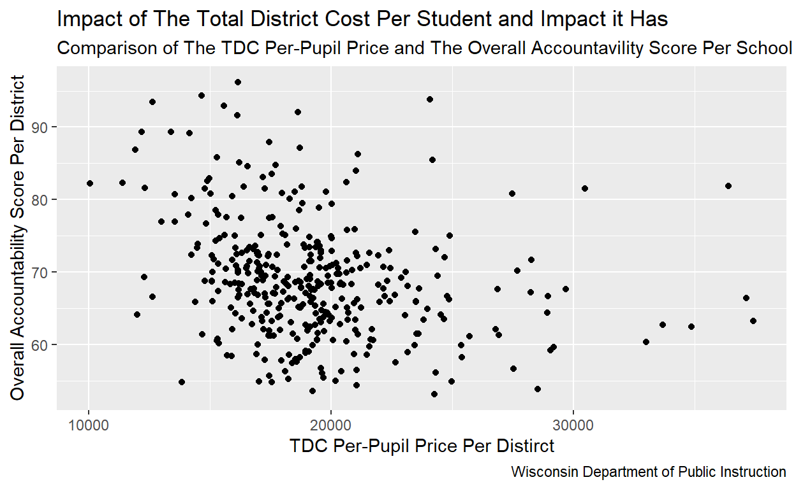
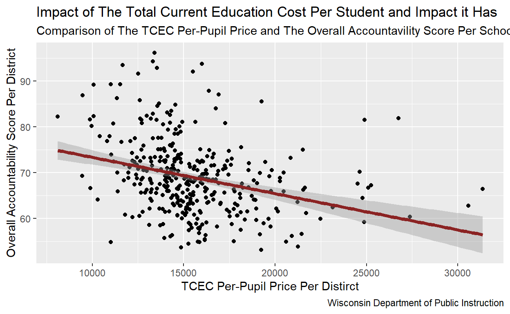
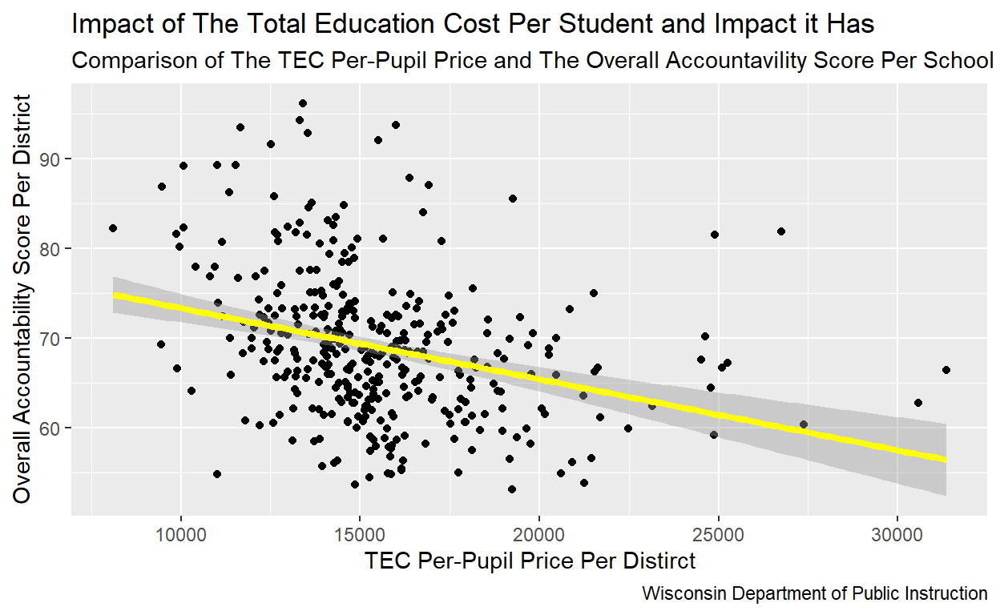
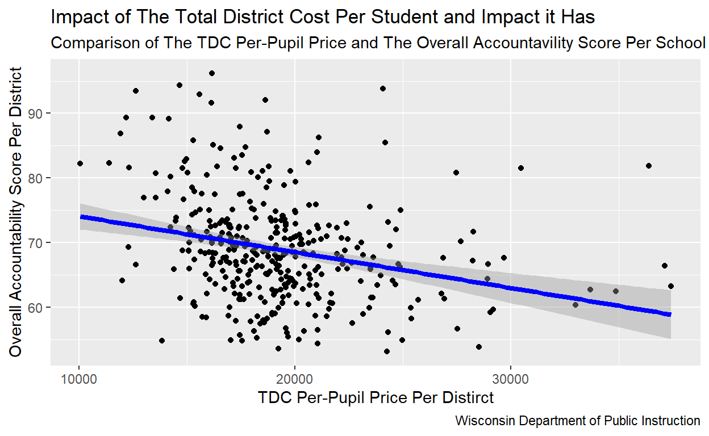

The relationship of the average spending and the school districts overall accountability performance.
For my research topic, I wanted to look at the relationship between the amount of money a school district spends per student and the school district performance during the 2023-2024 school year. This is done by looking at the impact the Per-Pupil Price has on the Overall Accountability Score. Wisconsin calculates the cost of education in three different ways, because of that we will look at all three to better understand the impact that school funding has on the education outcomes. These three calculations of school districts spending are:
Total Current Education Cost
Total Education Cost,
Total District Cost.
If a school district has a higher Per-Pupil Price, in any one of the three calculation methods, then the Overall Accountability Score will be higher for that school district. This is because the more money a school district spends on average per-student, then in turn that school district’s report card score will be higher, because of the increased support they can afford for each student.
This question and research topic is important because funding is one the go-to ways in conversations about how to improve schools. If data suggests that funding in education has positive effects on school performance then increasing funding could be beneficial, or if it has a neutral or negative effect then it would suggest that there are other factors in play that have a large impact on the quality of education.
This project will be using a Cross-sectional design, this is because all variables are measured at a single point in time (the 2023-2024 school year). This allows for the ability to compare and look at the relationship between the Per-Pupil Price and the Overall Accountability score, but hinders the ability to make a causal claim. This is becuase its only moment in time and cannont explain previous exposure.
All data was obtained in publicly released data from the Wisconsin Department of Public Instruction.
Sources: Report Card Score: https://dpi.wi.gov/accountability/resources/2023-24 Financial Report: https://dpi.wi.gov/accountability/resources/2023-24
Per-Pupil Price
This score is the average amount of spending divided by the total member/student
count, and is the main independent variable in my project.
The Wisconsin Department of Public Instruction has three ways to calculate the total costs. Because of this, and wanting to ensure that there are no discrepancies between the different ways to calculate the cost of education this project will look at all three.
Total Current Education Costs (TCEC): Includes the general fund instructional costs, Special project fund instructional costs, and instructional support services
Total Education Costs (TEC): TCEC + transportation, facility acquisition costs, and debt services.
Total District Costs (TDC): Total district spending, TCEC + TEC and expenditures like food and community based services.
Then by dividing the total cost per each total by member/student we get the Per-Pupil Price of all three total sums TCEC Per-Pupil Price, TEC Per-Pupil Price, and TDC Per-Pupil Price.
Overall Accountability Score
This score is based on the performance of students in a public school district, and is also the dependent variable for my project. There are multiple factors in the calculation including performance in subjects, growth of students in different subjects, the ability to close the achievement gaps, students determined to be on track, ability to help English Second Language students, students in special education programs, and post secondary readiness of students. This score is on 0.0 - 100.00 point scale, with 0.0 being the worst a school distinct can do, and 100.00 being the best. Then it assigns a report card score which consists of Fails to Meet Expectations: which 0.0 - 48.9 Meets Few Expectations: 49.0 - 59.9 Meets Expectations: 60.0 - 70.9 Exceeds Expectations: 71.0 - 83.9 Significantly Exceeds Expectations: 84.0 - 100 (zero schools in Wisconsin Fail to Meet Expectations)
Here we have a graph that showcases the distribution of the Overall Accountability Score, and how many schools fall into each score.

From looking at it, we can see that most Wisconsin Schools in the 2023-2024, meet expectations, with second most is Exceeds Expectations, and with less than 22 and 24 schools respectively Meets Few Expectations and Significantly Exceeds Expectations. This shows us that most schools in Wisconsin meet or exceed the requirement set by the state, but have few that do worse or significantly better than the expectations.
The three graphs below represent the relationship of the Per-Pupil Score per calculation method and the Overall Accountability Score from 0.0 - 100.
When looking at the graph we can see that there is a slight negative correlation between TCEC Per-Pupil Price and Overall Accountability Score, this suggests that each dollar spent causes worse results.

The graph above shows similar results with TCEC, that there is a negative correlation.

Once again that pattern is repeated for TDC.
While there is a difference in some of the locations, the graphs are similar. This disproves the confounding variables of TCEC, TEC, and TDC. This shows that there is no large discrepancy in spending between the groups that could cause a difference.
To better understand the results we will first look at the difference the different ways of calculating education cost has on the overall mean for each accountability score type.
| Overall Accountability Rating | Mean of Per-Pupil TCEC | Mean of Per-Pupil TEC | Mean of Per-Pupil TDC | Number |
|---|---|---|---|---|
| Meets Few Expectations | 16692.08 | 19410.79 | 20309.94 | 24 |
| Meets Expectations | 16132.75 | 18722.99 | 19871.88 | 201 |
| Exceeds Expectations | 14628.60 | 17458.91 | 18353.07 | 126 |
| Significantly Exceeds Expectations | 13703.76 | 16220.65 | 16929.99 | 22 |
When looking at the table we can see that the table follows a similar pattern for all ways of handling the calculation, that the worse a school district performs the more money they spend on average. This is similar to what the graphs for TCEC, TEC, and TDC are saying; the schools that spend the most money are performing the worst.
To further understand the regression and the consequences it has on my original hypothesis we will look at a table of the TCEC, TEC, and TDC. This will help us understand the regression (the impact each dollar has on the Overall Accountability Score) and it will also tell us the P-Value, to see if the null hypothesis is disproven, which would mean the P-Value would be below 0.05.
TCEC Regression
Call:
lm(formula = `Overall Accountability Score` ~ `TCEC Per-Pupil Price`,
data = school_district)
Coefficients:
(Intercept) `TCEC Per-Pupil Price`
81.2745581 -0.0007937 | Term | Estimate | Std. Error | T-Stat | P-Value |
|---|---|---|---|---|
| (Intercept) | 81.27 | 2.02 | 40.22 | 0 |
TCEC Per-Pupil Price |
0.00 | 0.00 | -6.22 | 0 |
When looking at the regression score and the regression table we learn that for each dollar spent is -0.0007937, this is also significant. It means for each 1000 dollars spent a school is expected to get -0.7937 in its scoring. Also with a P-Value of zero (more accurately near Zero) we know that there is statistical significance, and it disproves the null-hypothesis.
TEC Regression
Call:
lm(formula = `Overall Accountability Score` ~ `TEC Per-Pupil Price`,
data = school_district)
Coefficients:
(Intercept) `TEC Per-Pupil Price`
79.0947687 -0.0005572 | Term | Estimate | Std. Error | T-Stat | P-Value |
|---|---|---|---|---|
| (Intercept) | 79.09 | 2.05 | 38.59 | 0 |
TEC Per-Pupil Price |
0.00 | 0.00 | -5.04 | 0 |
Looking at the TEC regression we can see although it is similar to the TCEC the impact the dollar has is slightly less, being -0.0005572 in Overall Accountability Score, instead of TCEC -0.0007937. We can also prove the null-hypothesis wrong with the TEC with a P-Value near 0.
TDC Regression
Call:
lm(formula = `Overall Accountability Score` ~ `TDC Per-Pupil Price`,
data = school_district)
Coefficients:
(Intercept) `TDC Per-Pupil Price`
79.6200508 -0.0005549 | Term | Estimate | Std. Error | T-Stat | P-Value |
|---|---|---|---|---|
| (Intercept) | 79.62 | 2.02 | 39.46 | 0 |
TDC Per-Pupil Price |
0.00 | 0.00 | -5.39 | 0 |
The TDC is nearly identical to TEC, with the regression of TDC being -0.0005549. It also has a P-Value of near 0.
When looking at the regression for all three ways of calculating the cost of education we can see that for each dollar spent there is -0.0007937 (TCEC), -0.0005572 (TEC), and a -0.0005549 (TDC), decrease in the Overall Accountability Score. In a larger scale for each larger scale we can see that for each dollar spent the schools get worse. We also know that this is statistically significant because of the near zero P-Value for all 3.
Looking at the results we see that there is a negative correlation between the Per-Pupil Price of all three means of calculating the cost of education and The Overall Accountability Score, so should we take these results seriously? Does each dollar spent on a student slightly decrease the ability of the school district? The answer is no. When looking at an issue like the performance of a school and the funding it gets there are many outside variables that can affect a school, that fall outside the means of calculating the cost of education. What this data shows is that the means of calculating the cost of education does not vary much between each version. When looking at the confounding variables there are many that could be causing issues with my data. Just to name a few: a majority of schools in higher medium income areas have higher Accountability Score and those is lower medium income areas have a lower Accountability Score, also districts with higher needs, like requires more English Second Language programs and more assistance with food cost, have higher cost, and often times rich schools receive more private donation which are not calculated when looking at the total expenditures a school has. Because of all these reasons we cannot accept the results of the research project as causal. Overall when looking at the results we can see that no matter how you calculate the cost of education when only looking at the Per-Pupil Price and Overall Accountability score there is a slight negative correlation. This disproves my hypothesis, where I predicted that the more money spent that better a school would perform, according to my results it’s the opposite; each dollar spent decreases a school’s performance score. Going forward to better the research looking into the impact that some confounding variables have could help better determine the impact of increasing the cost of education has on the Overall Accountability Score. Some resources could be the impact of private donations and what additional expenses lower medium income schools have.
# Loading Report Card scores into R.
library(readxl)
X2023_2024_district_report_card <- read_excel("2023-2024_district_report_card.xlsx")
# This will give us the data for the Overall Accountability Score.# Loading school districts expenditures into R.
library(readxl)
cmpcst24_1_ <- read_excel("cmpcst24 (1).xlsx")
# This will give us the data for the different education costs totals and the total number of students per district.# Reassigning the data and selecting what I need.
report_card <- X2023_2024_district_report_card
report_card <- report_card |>
select("District Name", "Overall Accountability Score", "Overall Accountability Rating",
"Grade Band for Comparison", "District Enrollment") # Reassigning the data and selecting what I need.
district_cost <- cmpcst24_1_
district_cost <- district_cost |>
select("...5", "...6", "...9", "...11")#Giving proper names to the columns.
district_cost <- district_cost |>
rename(
`District Name` = `...5`,
`TCEC` = `...6`,
`TEC` = `...9`,
`TDC` = `...11`) # Getting rid the errors in the importing of the education cost data set.
district_cost <- district_cost |>
filter(
`District Name` != " ",
`District Name` != "NAME",
`District Name` != "18310.044339754681",
`District Name` != "Statewide Total")# joining the report card score to the district score.
school_district <- district_cost |>
inner_join(report_card)
# Joining the data on the school district name and then creating a new variable with all of the data.# Fixes the variables so R reads them as numeric values.
school_district <- school_district |>
mutate(
"TCEC" = as.numeric(`TCEC`),
"TEC" = as.numeric(`TEC`),
"TDC" = as.numeric(`TDC`),
"Overall Accountability Score" = as.numeric(`Overall Accountability Score`))# Creating-the-Per-Pupil-Price
school_district <- school_district |>
mutate(
"TCEC Per-Pupil Price" = `TCEC` / `District Enrollment`,
"TEC Per-Pupil Price" = `TEC` / `District Enrollment`,
"TDC Per-Pupil Price" = `TDC` / `District Enrollment`
)
# This calculates all of the Per-Pupil Prices.# Making a graph that showcases the amount of schools that fall in each report report card score
report_card_bar_chart <- school_district |>
mutate(`Overall Accountability Rating` = factor(
`Overall Accountability Rating`,
levels = c(
"Meets Few Expectations",
"Meets Expectations",
"Exceeds Expectations",
"Significantly Exceeds Expectations"
) # This changes the order in which they apear on the graph
)) |>
ggplot(aes(x = `Overall Accountability Rating`)) +
geom_bar(fill = "steelblue", color = "black", ) +
labs(
title = "Distribution of Accountability Ratings Across Wisconsin Districts",
x = "Overall Accountability Rating",
y = "Number of Districts",
) +
theme(axis.text.x = element_text(angle = 35, hjust = 1))
# Changes angle of text to prevent overlap.
report_card_bar_chart
# Making the graph for the distribution of TCEC
tcec_school_district_graph <- school_district |>
ggplot(aes(x = `TCEC Per-Pupil Price`,
y = `Overall Accountability Score`)) +
geom_point() +
labs(
title = "Impact of The Total Current Education Cost Per Student and Impact it Has",
subtitle = "Comparison of The TCEC Per-Pupil Price and The Overall Accountavility Score Per School Distirct",
x = "TCEC Per-Pupil Price Per Distirct",
y = "Overall Accountability Score Per District",
caption = "Wisconsin Department of Public Instruction"
)
tcec_school_district_graph
tec_school_district_graph <- school_district |>
ggplot(aes(x = `TCEC Per-Pupil Price`,
y = `Overall Accountability Score`)) +
geom_point() +
labs(
title = "Impact of The Total Education Cost Per Student and Impact it Has",
subtitle = "Comparison of The TEC Per-Pupil Price and The Overall Accountavility Score Per School Distirct",
x = "TEC Per-Pupil Price Per Distirct",
y = "Overall Accountability Score Per District",
caption = "Wisconsin Department of Public Instruction"
)
tec_school_district_graph
tdc_school_district_graph <- school_district |>
ggplot(aes(x = `TDC Per-Pupil Price`,
y = `Overall Accountability Score`)) +
geom_point() +
labs(
title = "Impact of The Total District Cost Per Student and Impact it Has",
subtitle = "Comparison of The TDC Per-Pupil Price and The Overall Accountavility Score Per School Distirct",
x = "TDC Per-Pupil Price Per Distirct",
y = "Overall Accountability Score Per District",
caption = "Wisconsin Department of Public Instruction"
)
tdc_school_district_graph
# Creating a Table with the mean of spending with each form of education cost based on the category
mean_table <- school_district |>
mutate(`Overall Accountability Rating` = factor(
`Overall Accountability Rating`,
levels = c(
"Meets Few Expectations",
"Meets Expectations",
"Exceeds Expectations",
"Significantly Exceeds Expectations"
)
)) |>
group_by(`Overall Accountability Rating`) |>
summarize(
`Mean of Per-Pupil TCEC` = mean(`TCEC Per-Pupil Price`, na.rm = TRUE),
`Mean of Per-Pupil TEC` = mean(`TEC Per-Pupil Price`, na.rm = TRUE),
`Mean of Per-Pupil TDC` = mean(`TDC Per-Pupil Price`, na.rm = TRUE),
Number = n()
) |>
knitr::kable(digits = 2)
mean_table| Overall Accountability Rating | Mean of Per-Pupil TCEC | Mean of Per-Pupil TEC | Mean of Per-Pupil TDC | Number |
|---|---|---|---|---|
| Meets Few Expectations | 16692.08 | 19410.79 | 20309.94 | 24 |
| Meets Expectations | 16132.75 | 18722.99 | 19871.88 | 201 |
| Exceeds Expectations | 14628.60 | 17458.91 | 18353.07 | 126 |
| Significantly Exceeds Expectations | 13703.76 | 16220.65 | 16929.99 | 22 |
# Graphing the regression of TCEC.
tcec_reg_school_district_graph <- tcec_school_district_graph +
geom_smooth(method = "lm", color = "brown4", size = 1.5)
tcec_reg_school_district_graph
# Finding the Regression of TCEC
tcec_reg <- lm(`Overall Accountability Score` ~ `TCEC Per-Pupil Price`, data = school_district)
tcec_reg |> summary()
Call:
lm(formula = `Overall Accountability Score` ~ `TCEC Per-Pupil Price`,
data = school_district)
Residuals:
Min 1Q Median 3Q Max
-17.7323 -5.0999 -0.6197 3.9103 25.5672
Coefficients:
Estimate Std. Error t value Pr(>|t|)
(Intercept) 81.2745581 2.0205189 40.225 < 2e-16 ***
`TCEC Per-Pupil Price` -0.0007937 0.0001277 -6.218 1.36e-09 ***
---
Signif. codes: 0 '***' 0.001 '**' 0.01 '*' 0.05 '.' 0.1 ' ' 1
Residual standard error: 7.692 on 371 degrees of freedom
Multiple R-squared: 0.09437, Adjusted R-squared: 0.09192
F-statistic: 38.66 on 1 and 371 DF, p-value: 1.361e-09# Graphing the regression of TEC.
tec_reg_school_district_graph <- tec_school_district_graph +
geom_smooth(method = "lm", color = "yellow1", size = 1.5)
tec_reg_school_district_graph
# Finding the Regression of TEC
tec_reg <- lm(`Overall Accountability Score` ~ `TEC Per-Pupil Price`, data = school_district)
tec_reg |> summary()
Call:
lm(formula = `Overall Accountability Score` ~ `TEC Per-Pupil Price`,
data = school_district)
Residuals:
Min 1Q Median 3Q Max
-16.9509 -4.9012 -0.5468 3.6678 27.9031
Coefficients:
Estimate Std. Error t value Pr(>|t|)
(Intercept) 79.0947687 2.0498653 38.585 < 2e-16 ***
`TEC Per-Pupil Price` -0.0005572 0.0001105 -5.044 7.14e-07 ***
---
Signif. codes: 0 '***' 0.001 '**' 0.01 '*' 0.05 '.' 0.1 ' ' 1
Residual standard error: 7.82 on 371 degrees of freedom
Multiple R-squared: 0.06418, Adjusted R-squared: 0.06166
F-statistic: 25.44 on 1 and 371 DF, p-value: 7.14e-07# Graphing the regression of TDC.
tdc_reg_school_district_graph <- tdc_school_district_graph +
geom_smooth(method = "lm", color = "blue1", size = 1.5)
tdc_reg_school_district_graph
# Finding the Regression of TDC
tdc_reg <- lm(`Overall Accountability Score` ~ `TDC Per-Pupil Price`, data = school_district)
tdc_reg |> summary()
Call:
lm(formula = `Overall Accountability Score` ~ `TDC Per-Pupil Price`,
data = school_district)
Residuals:
Min 1Q Median 3Q Max
-17.147 -5.021 -0.591 3.836 27.533
Coefficients:
Estimate Std. Error t value Pr(>|t|)
(Intercept) 79.6200508 2.0177971 39.459 < 2e-16 ***
`TDC Per-Pupil Price` -0.0005549 0.0001029 -5.392 1.24e-07 ***
---
Signif. codes: 0 '***' 0.001 '**' 0.01 '*' 0.05 '.' 0.1 ' ' 1
Residual standard error: 7.784 on 371 degrees of freedom
Multiple R-squared: 0.07268, Adjusted R-squared: 0.07018
F-statistic: 29.08 on 1 and 371 DF, p-value: 1.24e-07